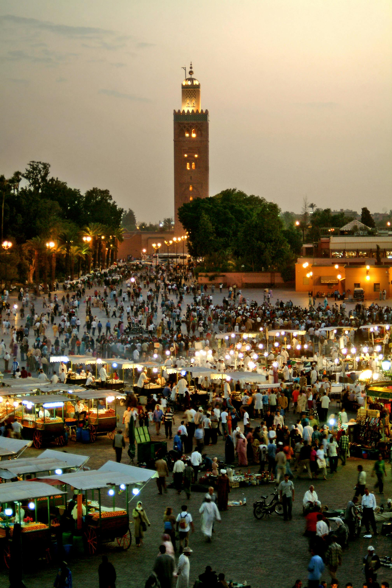
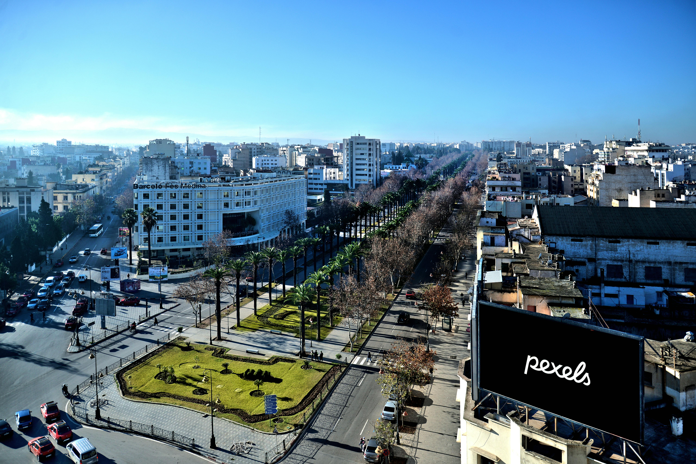
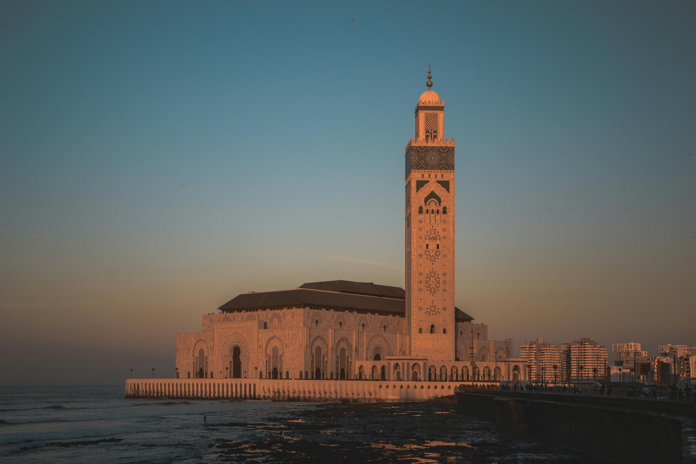
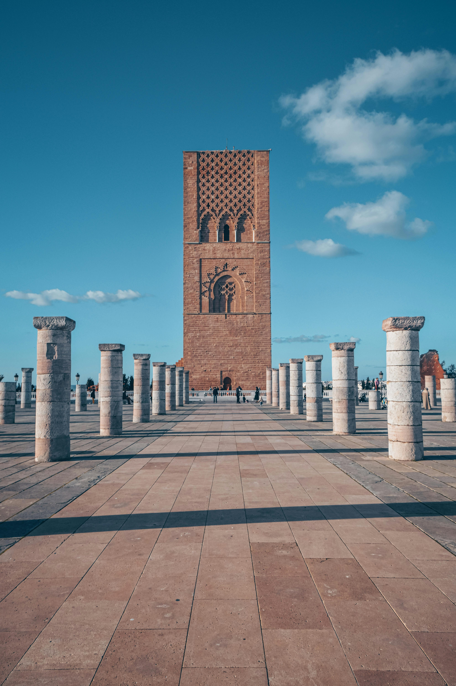
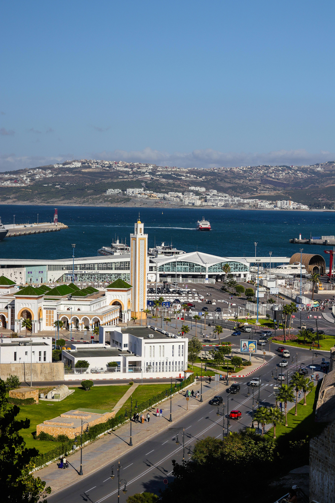
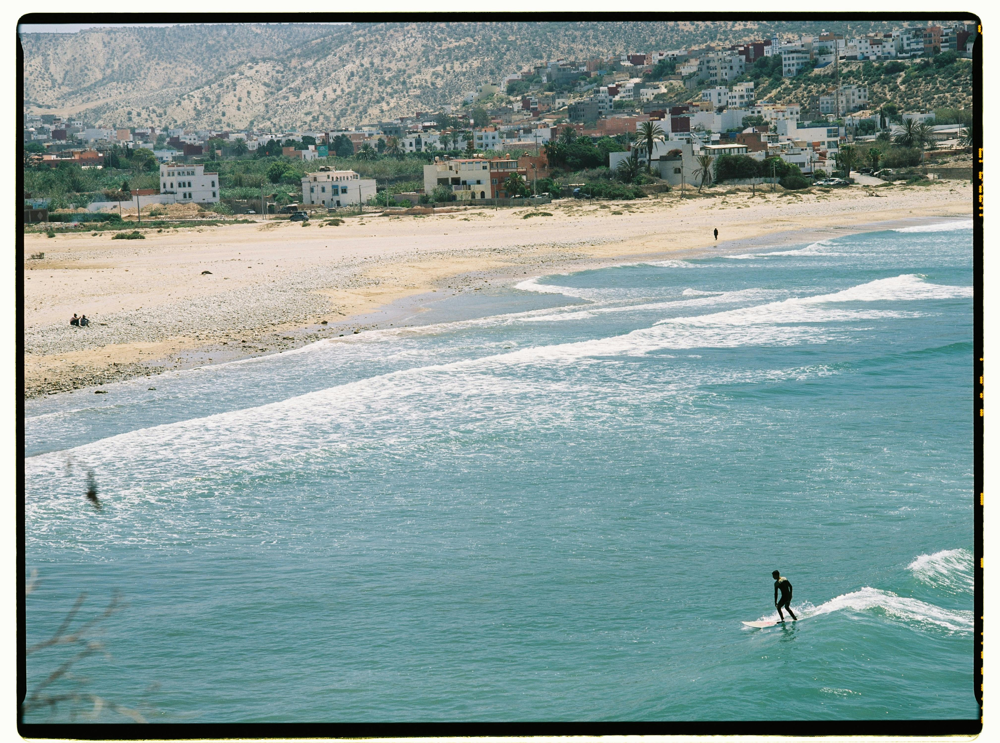
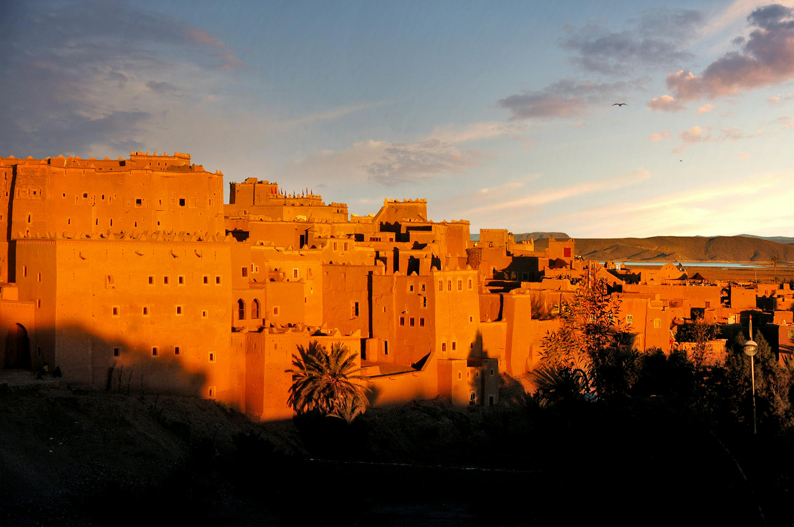
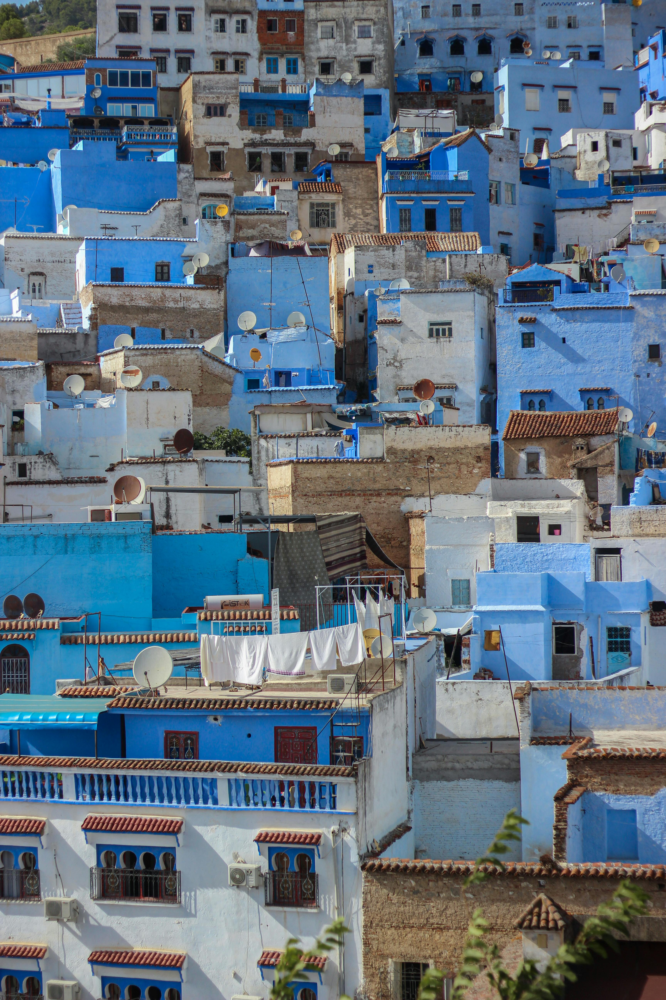
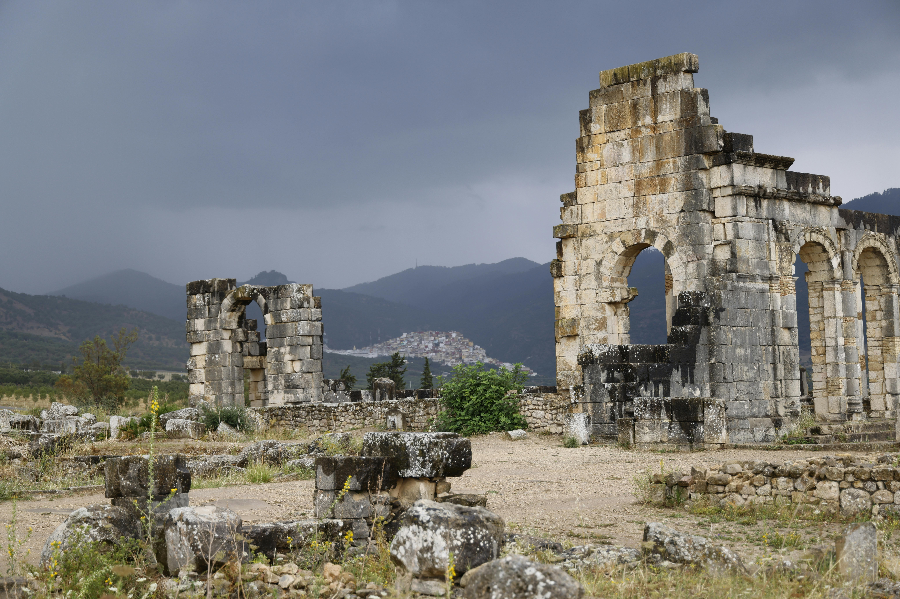
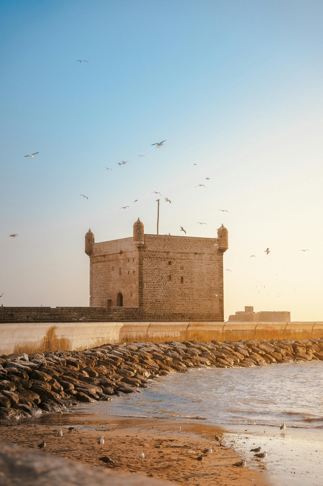

Le Maroc regorge de villes fascinantes à découvrir au volant. Que vous soyez amateur de culture, de gastronomie, d'histoire ou de paysages, voici notre sélection des 10 villes marocaines incontournables à explorer en voiture, avec conseils pratiques pour chaque destination.
-
1. Marrakech

La ville ocre séduit par ses souks animés, ses palais et ses jardins. Idéale pour rayonner vers l'Atlas ou Essaouira.
-
2. Fès

Capitale spirituelle, Fès est célèbre pour sa médina classée UNESCO et ses tanneries. Prévoyez de bonnes chaussures pour arpenter ses ruelles !
-
3. Casablanca

La plus grande ville du pays, moderne et dynamique, avec la majestueuse mosquée Hassan II en bord de mer.
-
4. Rabat

La capitale administrative, élégante et paisible, offre plages, monuments historiques et quartiers animés.
-
5. Tanger

Porte de l'Europe, Tanger séduit par son ambiance cosmopolite, sa corniche et ses plages.
-
6. Agadir

Station balnéaire moderne, Agadir est parfaite pour les amateurs de surf, de soleil et de farniente.
-
7. Ouarzazate

Aux portes du désert, Ouarzazate est le point de départ idéal pour explorer les kasbahs et les oasis du Sud.
-
8. Chefchaouen

La perle bleue du Rif, célèbre pour ses ruelles colorées et son ambiance paisible.
-
9. Meknès

Ville impériale, Meknès charme par ses remparts, ses portes monumentales et sa proximité avec Volubilis.
-
10. Essaouira

Ville côtière au charme authentique, Essaouira est idéale pour une escapade entre médina, plage et gastronomie.
Prêt à explorer le Maroc autrement ?
Louez votre voiture sur RAKB et partez à la découverte des plus belles villes marocaines en toute liberté !
Télécharger l'application RAKB